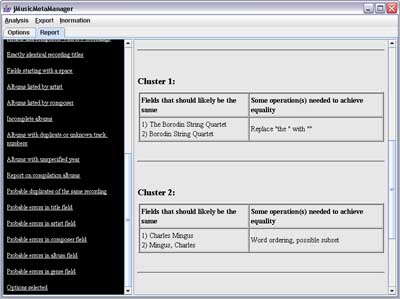
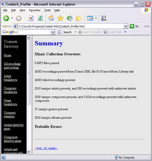

The Report Panel allows the user to view reports that are generated
by jMusicMetaManager. The left side of the Report Panel displays a
list of all available reports, and the right side displays the currently selected
report. Clicking on a report on the left side will cause the corresponding report
to be displayed on the right side.
Note that all reports generated by jMusicMetaManager are HTML-based and are
saved to disk, so the user may view them using any web browsing software at
any time. In fact, such browsing software is generally better optimized for
rendering HTML than the Core Java libraries, so it
may be desirable to use such browsing software rather than the Report Panel
when viewing very large reports.
Note that only those reports that were selected to be generated in the Options
Panel reports section will be available on the Report Panel.

Figure 1: A screenshot of the Report Panel, showing a sample
Probable errors in artist field report.

Figure 2: A screenshot of a sample Summary report,
as displayed via a web browser.
Reports That Can be Generated
- MP3 files found that could not be parsed:. This report
lists all files with an MP3 extension that were found in the directory specified
in the Browse MP3 Directory text field of the Options
Panel (or its subdirectories) whose ID3 tags could not be parsed. It should
be noted that jMusicMetaManager skips all such files during later processing.
- Non-MP3 files found: This report lists all files in the
directory specified in the Browse MP3 Directory text field of the
Options Panel (or its subdirectories) that
do not have an MP3 extension. The case of the extension is ignored. It should
be noted that these files do not have any effect on processing, as they are
ignored by jMusicMetaManager other than for the purpose of this report. Only
the extension of the file is considered when generating this report, not actual
file content.
- All recordings parsed (before merge): This report lists
the path, title and artist of all recordings for which metadata was extracted,
before any processing is performed. Two separate lists are produced, one for
the recordings extracted from ID3 tags and one for recordings extracted from
an iTunes XML file.
- Files in iTunes XML but not at specified path: This report
lists each recording that is parsed from the iTunes XML file for which there
is no valid readable file at the specified path. No verification is performed
during the generation of this particular report of whether files that are
present are in fact valid MP3 files, as this information is available in other
reports. Unlike the Recordings in one source but not the other report,
this report may be generated even if the Use MP3s option of the Options
Panel is not selected.
- Recordings in one source but not the other: This report
lists any recordings that were found in the iTunes XML file but for which
corresponding MP3 files were not found, and vice versa.
- Fields that do not correspond between sources: This report
lists any differences in significant fields in the metadata for each recording
parsed from the iTunes XML file and its corresponding MP3 file. It may be
appropriate to review this metadata to ensure that it is consistent. jMusicMetaManager
uses the metadata extracted from the iTunes file by default when there is
such a disagreement.
- All post-iTunes and ID3 merge metadata: This report lists
all available metadata for each recording immediately after the metadata extracted
from the iTunes file and/or the MP3 files has been combined. If an entry in
the iTunes file contains a reference to a file with a path that is also found
during ID3 parsing, then the metadata from these two sources is combined into
a single recording. jMusicMetaManager uses the metadata extracted from the
iTunes file by default when there is a disagreement between the fields of
any two recordings from different sources with the same path.
- All recordings post-sorting: This report gives all available
metadata for each recording. This report is similar to the All post-iTunes
and ID3 merge metadata report, except that the recordings are sorted
by title.
- Artist breakdown: This report lists the unique names of
all artists found, as well as the number of recordings and the percentage
of total recordings corresponding to each artist. The number of unique composers,
albums and genres that have at least one recording corresponding to each artist
is also reported. The tallies listed do not include counts for unknown composers,
genres and albums.
- Composer breakdown: This report lists the unique names
of all composers found, as well as the number of recordings and the percentage
of total recordings corresponding to each composer. The number of unique artists,
albums and genres that have at least one recording corresponding to each composer
is also reported. The tallies listed do not include counts for unknown artists,
genres and albums.
- Genre breakdown: This report lists the unique names of
all genres found, as well as the number of recordings and the percentage of
total recordings belonging to each genre. The number of unique artists, composers
and albums that have at least one recording belonging to each genre is also
reported. The tallies listed do not include counts for unknown artists, composers
and albums.
- Comment statistics: This report lists all unique file comments
found, as well as the number of recordings and the percentage of total recordings
corresponding to each comment. The number of unique artists, composers, albums
and genres that have at least one recording corresponding to each comment
is also reported. The tallies listed do not include counts for unknown artists,
composers, genres and albums.
- Artists listed by genre: This report alphabetically lists
all unique genres. Artists are listed under a given genre if they have at
least one recording belonging to the genre. Artists also have the number of
recordings they have belonging to the given genre listed beside their entries,
along with the percentage of the total number of recordings in the genre that
they represent.
- Composers listed by genre: This report alphabetically lists
all unique genres. Composers are listed under a given genre if they have at
least one recording belonging to the genre. Composers also have the number
of recordings they have belonging to the given genre listed beside their entries,
along with the percentage of the total number of recordings in the genre that
they represent.
- Recordings missing key metadata: This report lists all
metadata for those recordings that have empty title, artist, composer, album
and/or genre fields. A separate table is produced for each of these fields.
- Artists and composers with few recordings: This report
alphabetically lists artists with fewer recordings than the number specified
in the corresponding Cutoff (2-90) text box. Artists with fewer than
half this number of recordings are listed in bold. A similar table many then
be listed immediately after, but based on the composer field instead of the
artist field. Note that only one of these options may be present, based on
the settings on the right side of the
Options Panel.
- Exactly identical recording titles: This report lists all
recordings that have exactly the same title (before any processing). This
is useful in seeing how many versions of the same piece exist in the music
database. These duplicates may be identical copies of the same recording occurring
in different places, or they may be different versions of the same piece.
The Probable duplicates of the same recording report can be consulted
to detect which of these recordings are likely multiple copies of the same
recording. The Exactly identical recording titles report begins with
several overall statistics, followed by a list of all titles for which there
is more than one recording with the same name. Finally, the details of all
such recordings in each identical title cluster are reported.
- Fields starting with a space: This report separately lists
all titles, artists, composers, albums and genres that start with a space.
Each such field is only listed once when multiple fields are identical. This
report is useful in immediately highlighting this particularly common error.
- Albums listed by artist: This report alphabetically lists
each unique artist present. All albums present that have at least one recording
by each given artist are listed under that artist's entry. Note is also made
of how many tracks by each given artist belonging to the given album are present
in the music collection, how many total tracks the album is marked as containing
(cumulative for mult-disc sets, if annotated), what percentage of the total
tracks are by the given artist (marked in bold if not equal to 100%) and whether
each album is marked as a compilation.
- Albums listed by composer: This report alphabetically lists
each unique composer present. All albums present that have at least one recording
by each given composer are listed under that composer's entry. Note is also
made of how many tracks by each given composer belonging to the given album
are present in the music collection, how many total tracks the album is marked
as containing (cumulative for mult-disc sets, if annotated), what percentage
of the total tracks are by the given composer (marked in bold if not equal
to 100%) and whether each album is marked as a compilation.
- Incomplete albums: This report consists of an alphabetical
list of all albums that are missing tracks, followed by a list of all albums
with an unknown number of tracks. In the case of multi-album sets, the total
number of tracks includes all tracks from all component albums, as long as
they all have the same name. Albums that include less than the percentage
specified in the % Tracks Present (1-100) text boxon on the right
side of the Options Panel of the total number of tracks that the album
is marked as containing are listed in bold.
- Albums with duplicate or unknown track numbers: This report
consists of an alphabetical list of all albums with the same name that contain
more than one recording with the same track number or that contain one or
more recordings that do not have a track number specified. Note that some
albums may be inappropriately listed here in cases where two different albums
have exactly the same name.
- Albums with unspecified year: This report lists all albums
that have one or more recordings missing year metadata.
- Report on compilation albums: This report alphabetically
lists all unique albums that contain at least one recording marked as a compilation
or with an unknown compilation status. Albums where some recordings are marked
as compilations and others are not are written in bold, since all tracks in
an album should have the same compilation marking. An album should be marked
as a compilation if and only if not all of its component recordings have the
same value for their artist fields. A separate list is therefore also included
of all albums that are incorrectly not marked as compilations but contain
multiple artists (note that some entirely different albums sometimes have
an identical name, which will result in incorrect inclusion here). Another
list of albums that are incorrectly marked as compilations but contain only
one artist is also generated (some of these may in fact be compilation albums
that are missing all tracks by all but one artists).
- Fields differing only in case: Entries listed in this report
indicate field values where otherwise identical (before any other find/replace,
reordered word subset or edit distance processing has been performed) title,
artist, composer, genre and album fields differ in case. One list is produced
for each of these fields. It will likely be appropriate to correct metadata
so that all fields that are otherwise identical also have the same case. Only
one sample value is listed for each cluster of results. For example, field
values of "Reggae" and "reggae" will result in a singe
value of "reggae" reported here.
- Detailed replacements made: Entries in this report indicate
all changes that were made during all find/replace operations. These operations
were performed after lowercase conversion (if requested) and before edit distance
operations. The reported changes are cumulative. These find/replace operations
were also performed before any requested reordered word subset operations,
except for space removals, which were performed after.
- Newly identical fields after find and replace: Entries
listed in this report indicate all title, artist, composer, album and genre
fields that were made newly identical after the find/replace operations were
performed. Any such occurrences are probably due to errors in the metadata
and should be corrected. The Detailed replacements made report can
be consulted for more information. These operations were performed after lowercase
conversion (if requested) and before edit distance operations. These find/replace
operations were also performed before any requested reordered word subset
operations, except for space removals, which were performed after. Only one
sample value is listed for each cluster of results, and it reflects all selected
processing performed up until the time that this report was generated. For
example, field values of "Dr. John" and "Dr John" would
result in a singe value of "dr john" reported here if the appropriate
processing preferences were set.
- Fields with scrambled word orderings: This report lists
all title, artist, composer, album and genre fields that contain identical
words, but in any order, and where sometimes the words in one field are a
subset of the words in the other. For example, occurrences of both "Duke
Ellington" and "Ellington Duke" might be reported here. In
order to be listed here, two field values must have at least the percentage
of identical words specified next to the Check word ordering option
on the left side of the Options Panel
(the words may occur in any order). The percentage is calculated based on
the field with the higher number of words, and is calculated after all selected
find/replace operations have been performed (except the removal of spaces),
but before any edit distance calculations have been performed. Only one sample
value is listed for each cluster of results, and it reflects all selected
processing performed up until the time that this report was generated. For
example, field values of "Jackson, Mahalia" and "Mahalia Jackson"
might result in a singe value of "mahalia jackson" reported here.
Processing for titles, artists, composers, albums and genres are each only
performed and reported if each corresponding Probable Errors report
is set to be generated.
- Fields whose words are subsets of another: This report
lists all title, artist, composer, album and genre fields that contain similar
words, usually where the words in one are a subset of the words in the other,
and where the words may be in any order. For example, occurrences of both
"The Royal Philharmonic Orchestra" and "The Royal Philharmonic"
might be reported here. In order to be listed here, the two fields must have
at least the percentage of the same words that is specified next to the Check
word subsets preference on the left
side of the Options Panel (the words may occur in any order). The percentage
is calculated based on the field with the lower number of words, and is calculated
after all selected find/replace operations have been performed (except the
removal of spaces), but before any edit distance calculations have been performed.
Note that items that might have otherwise been listed here may be included
in the Fields with scrambled word orderings report instead if this report
is also set to be generated. Only one sample value is listed for each cluster
of results, and it reflects all selected processing performed up until the
time that this report was generated. For example, field values of "Duke
Ellington and His Orchestra" and "Duke Ellington" will result
in a singe value of "duke ellington" reported here. Processing for
titles, artists, composers, albums and genres are each only performed and
reported if each corresponding Probable Errors report is set to be
generated.
- Edit distances: This report lists the edit distances between
all pairs of values in each of the title, artist, composer, album and genre
fields. One table is generated for each type of field. Each cell in a table
contains up to three values, depending on the preferences selected by the
user on the left side of the Options
Panel. These are (in the following order): absolute edit distance, proportional
edit distance and subset edit distance. Absolute edit distance is the basic
Levenshtein distance. Proportional edit distance is the absolute edit distance
divided by the length of the longer string, expressed as a percentage. Subset
edit distance is the absolute edit distance minus the difference in lengths
of the strings, all divided by the length of the shorter string and expressed
as a percentage. Distances in bold on the table fall below the thresholds
set by the user in the preferences. Entries consisting of a hyphen indicate
one or both of the field values are unknown, so the edit distance cannot be
calculated. All edit distance calculations are performed on fields after any
selected find/replace and/or reordered word subset operations have been performed
and any resulting merging of fields has occurred. Processing for titles, artists,
composers, albums and genres are each only performed and reported if each
corresponding Probable Errors report is set to be generated.
- Filtered candidate duplicate recordings: This report lists
all recordings that were found to have similar titles, but were rejected as
being duplicates of other recordings because of the selected filters (similar
duration, identical artist, identical composer, one or more identical genres
and/or different albums). The similarity of titles is assessed after all selected
find/replace, reordered word subset and/or edit distance operations are performed,
but no such operations are applied to any other fields for the purposes of
this report. Each cluster of similar titles where one or more candidate duplicates
were filtered out is listed, and each such listing includes either one or
two tables. The first table, which is always present, lists recordings that
were not found to be duplicates of any other recordings in the cluster. The
second table lists all recordings in the cluster, if any, that were in fact
found to be duplicates of one or more other recordings in the cluster.
- Probable duplicates of the same recording: This report
lists recordings that are likely to be redundant duplicates of the same recording.
First, all recordings whose title fields are judged to be similar after any
selected find/replace, reordered word subset and edit distance processing
are grouped together into clusters. Then the filters selected in the Duplicate
Recording Detection Settings section of the left
side of the Options Panel are applied to each such cluster. Specifically,
recordings are filtered out of each cluster unless they have similar durations,
have the same value for their artist fields, have the same value for their
composer fields, share at least one genre and/or have different values for their
album fields. Note that no processing is performed on artist, composer, genre
or album fields as far as the generation of this report itself is concerned.
Each cluster may be broken into further clusters during this processing, if
appropriate. Each cluster with more than one surviving recording is then reported.
It may be appropriate to delete some of these multiples for the sake of removing
redundancy in the music collection. Note that some false errors may be reported
here, as the system is biased under the default settings towards catching
all true errors. Large clusters of false errors sometimes form when processing
extremely large collections. Such clusters may be ignored by the user, or
he or she may wish to change the extraction parameters on the left
side of the Options Panel.
- Probable errors in title field: This report lists probable
errors in the title field of the input music database's metadata. Each cluster
listed indicates a set of several differing yet similar values for the title
field that are found in the music database. The values found in each cluster
should likely, in reality, be the same. These possible errors should be reviewed
and, if appropriate, the metadata should be corrected accordingly. Some clusters
may have one or more entries that should not in fact be the same as the others.
This is a result of processing that generally errs on the side of reporting
false errors rather than missing true errors. Some of the possible transformations
that could make them the same are also listed. Only a subset of the necessary
find/replace operations may be listed. Additional metadata for each recording
in each cluster is also listed. Probable errors reported here were all discovered
as a result of the find/replace, reordered word subset and/or edit distance
processing that was selected and performed. Note that some false errors may
be reported here, as the system is biased under the default settings towards
catching all true errors. Large clusters of false errors sometimes form when
processing extremely large collections. Such clusters may be ignored by the
user, or he or she may wish to change the extraction parameters on the left
side of the Options Panel.
- Probable errors in artist field: This report lists probable
errors in the artist field of the input music database's metadata. Each table
listed indicates a cluster of several differing yet similar values for the
artist field that are found in the music database. The values found in each
cluster should likely, in reality, be the same. These possible errors should
be reviewed and, if appropriate, the metadata should be corrected accordingly.
Some clusters may have one or more entries that should not in fact be the
same as the others. This is a result of processing that generally errs on
the side of reporting false errors rather than missing true errors. Some of
the possible transformations that could make them the same are also listed.
Only a subset of the necessary find/replace operations may be listed. Probable
errors reported here were all discovered as a result of the find/replace,
reordered word subset and/or edit distance processing that was selected and
performed. Note that some false errors may be reported here, as the system
is biased under the default settings towards catching all true errors. Large
clusters of false errors sometimes form when processing extremely large collections.
Such clusters may be ignored by the user, or he or she may wish to change
the extraction parameters on the left
side of the Options Panel.
- Probable errors in composer field: This report lists probable
errors in the composer field of the input music database's metadata. Each
table listed indicates a cluster of several differing yet similar values for
the composer field that are found in the music database. The values found
in each cluster should likely, in reality, be the same. These possible errors
should be reviewed and, if appropriate, the metadata should be corrected accordingly.
Some clusters may have one or more entries that should not in fact be the
same as the others. This is a result of processing that generally errs on
the side of reporting false errors rather than missing true errors. Some of
the possible transformations that could make them the same are also listed.
Only a subset of the necessary find/replace operations may be listed. Probable
errors reported here were all discovered as a result of the find/replace,
reordered word subset and/or edit distance processing that was selected and
performed. Note that some false errors may be reported here, as the system
is biased under the default settings towards catching all true errors. Large
clusters of false errors sometimes form when processing extremely large collections.
Such clusters may be ignored by the user, or he or she may wish to change
the extraction parameters on the left
side of the Options Panel.
- Probable errors in album field: This report lists probable
errors in the album field of the input music database's metadata. Each table
listed indicates a cluster of several differing yet similar values for the
album field that are found in the music database. The values found in each
cluster should likely, in reality, be the same. These possible errors should
be reviewed and, if appropriate, the metadata should be corrected accordingly.
Some clusters may have one or more entries that should not in fact be the
same as the others. This is a result of processing that generally errs on
the side of reporting false errors rather than missing true errors. Some of
the possible transformations that could make them the same are also listed.
Only a subset of the necessary find/replace operations may be listed. Probable
errors reported here were all discovered as a result of the find/replace,
reordered word subset and/or edit distance processing that was selected and
performed. Note that some false errors may be reported here, as the system
is biased under the default settings towards catching all true errors. Large
clusters of false errors sometimes form when processing extremely large collections.
Such clusters may be ignored by the user, or he or she may wish to change
the extraction parameters on the left
side of the Options Panel.
- Probable errors in genre field: This report lists probable
errors in the genre field of the input music database's metadata. Each table
listed indicates a cluster of several differing yet similar values for the
genre field that are found in the music database. The values found in each
cluster should likely, in reality, be the same. These possible errors should
be reviewed and, if appropriate, the metadata should be corrected accordingly.
Some clusters may have one or more entries that should not in fact be the
same as the others. This is a result of processing that generally errs on
the side of reporting false errors rather than missing true errors. Some of
the reported clusters may include some genres that may in fact not be part
of the cluster. This is due to a minor processing anomaly when there are multiple
genres. Some of the possible transformations that could make them the same
are also listed. Only a subset of the necessary find/replace operations may
be listed. Probable errors reported here were all discovered as a result of
the find/replace, reordered word subset and/or edit distance processing that
was selected and performed. Note that some false errors may be reported here,
as the system is biased under the default settings towards catching all true
errors. Large clusters of false errors sometimes form when processing extremely
large collections. Such clusters may be ignored by the user, or he or she
may wish to change the extraction parameters in the Options Panel. Note that
some false errors may be reported here, as the system is biased under the
default settings towards catching all true errors. Large clusters of false
errors sometimes form when processing extremely large collections. Such clusters
may be ignored by the user, or he or she may wish to change the extraction
parameters on the left side of the
Options Panel.
- Options selected: This report indicates the preferences
set by the user in the Options Panel. These
preferences determine which reports are generated and control the parameters
of the processing that affects the contents of the reports generated.
- Processing time log: This report indicates how long each
processing task took.
-top of page-